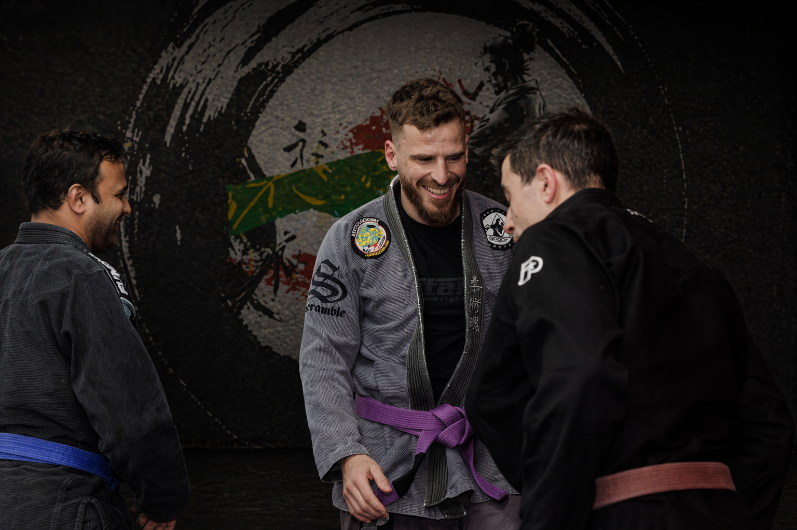
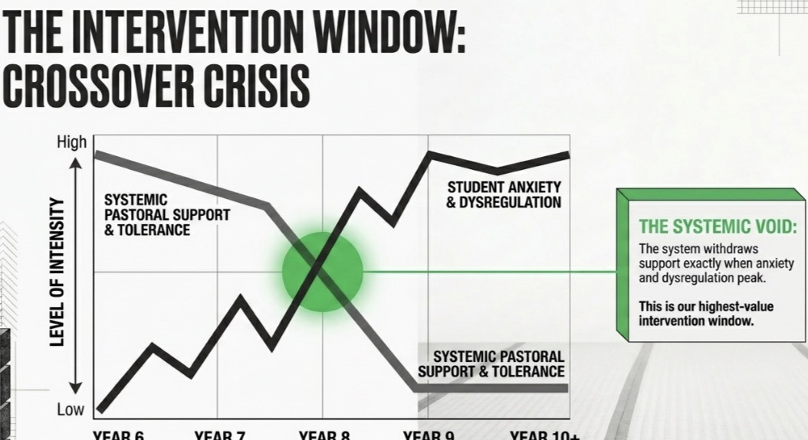
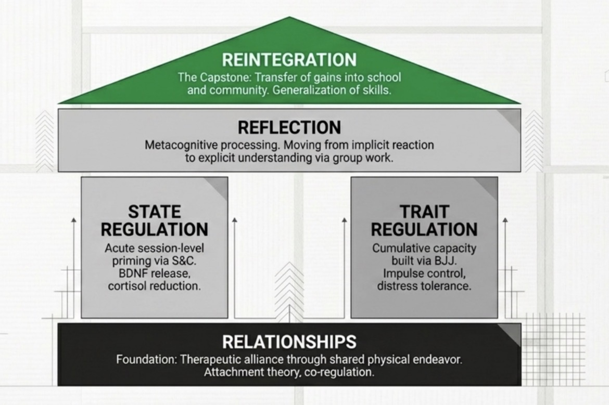
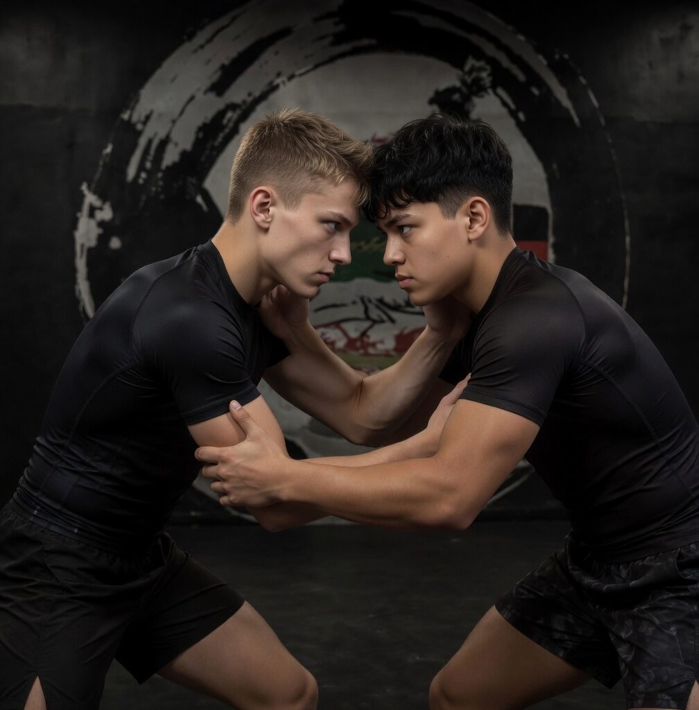
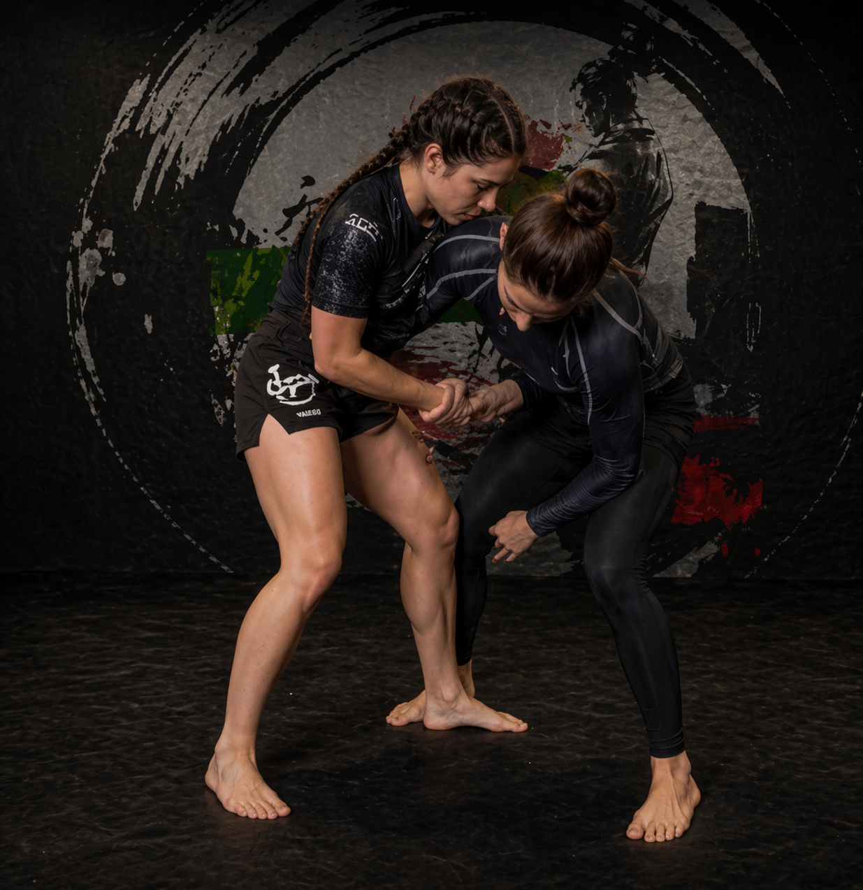
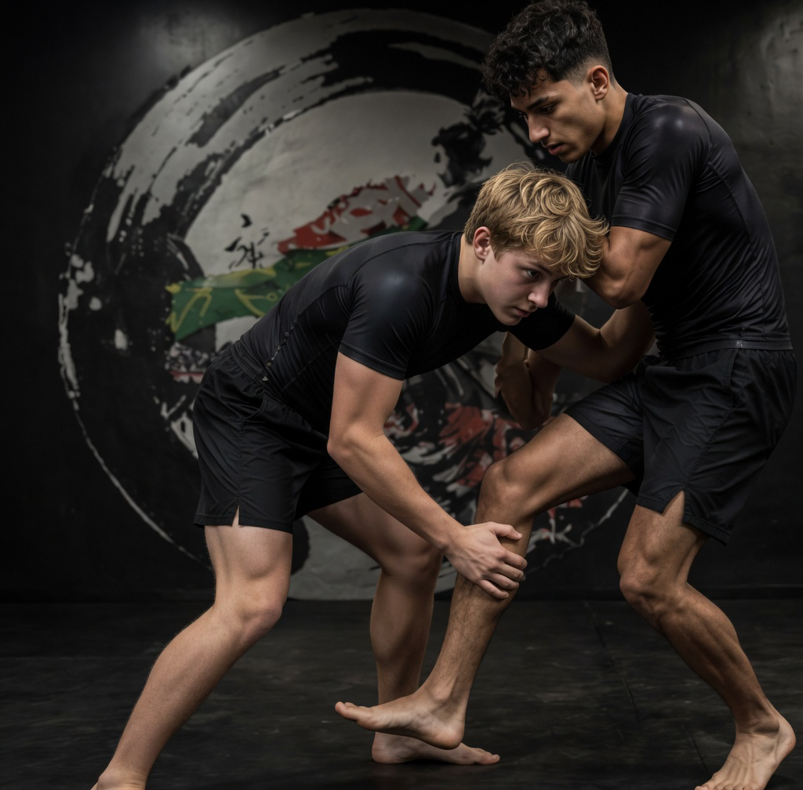
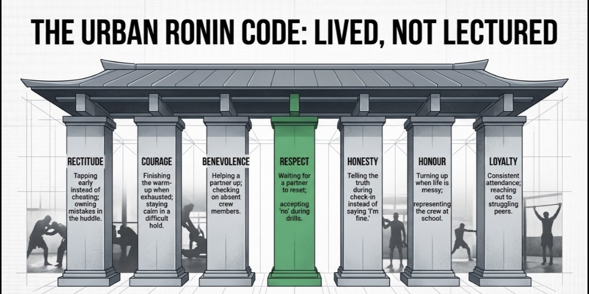

Every year, young people in our schools are failed; not because they are unteachable; but because the system misidentified what they actually needed. Urban Ronin CIC exists at that fracture point. A psychologically led intervention using strength and conditioning, psychological group work and BJJ. This is education done different.

The Lost in the System Hypothesis proposes that young people at risk of exclusion often have undiagnosed needs: such as mental health or neurodevelopmental needs: that make them vulnerable to a predictable systemic failure. One that begins as early as the Year 7 transition, though the signs were almost always present long before.
In primary school, these young people were contained by familiarity. One teacher, shared knowledge of their strengths and difficulties, and above all a sense of belonging.
The secondary transition fractures that. Multiple teachers, a new cohort of peers, and rising expectations around autonomy and independence expose what was previously managed. Initial leniency provides a brief buffer: but after the first term, behavioural standards are expected and monitored. The scaffolding that held things together is gone.
By mid-Year 7, knowledge gaps become visible and prior containment begins to fail. Compensatory behaviours emerge. Young people get labelled as disruptive rather than struggling.
By Year 8 the pattern accelerates. Fixed-term exclusions loom. Avoidance, refusal and persistent non-compliance bring repeated SLT involvement. Timetables reduce. Access to peers, curriculum and the social and emotional development that school should provide narrows progressively.
By mid-Year 8, isolation is a significant risk. Knowledge gaps have widened. Avoidance has become the primary coping strategy. No school setting can now meet the need without specialist support: and weeks, then months, then years pass with no progress.
These young people are lost in the system. Nominally on roll. Effectively absent. On a NEET trajectory, without GCSEs, without prosocial peers, and at growing risk of exploitation and involvement in harm.

Urban Ronin intervenes at Year 8 where escalation is underway, permanent exclusion has not yet occurred. This is the highest-value intervention window.
Traditionally this is where the system begins to struggle with engagement and emotional containment: and where the young person may push hardest against the support being offered.
The system unintentionally withdraws support exactly when anxiety and dysregulation peak. We step in at precisely that point with a psychologically planned environment built on four interlocking mechanisms: Relationships, State Regulation, Trait Regulation, Reflection, and Reintegration.
Urban Ronin is a therapeutic community informed intervention: one where young people have an equal stake in their support and participation.
Every element of the session is designed with purpose. The physical activity, the group work, and the BJJ are deliberately sequenced around Haigh's (2013) five quintessences: attachment, containment, communication, inclusion and agency. The physical activity facilitates a neurobiological learning state in which psychoeducation, identity work, and therapeutic reflection can actually land.
The programme is structured around four interlocking clinical mechanisms: Relationships (the foundation; without this nothing else functions), State Regulation (acute, session-level neurobiological priming for learning via S&C), Trait Regulation (cumulative emotional regulation capacity built through BJJ), Reflection (metacognitive processing in the group work block), and Reintegration (transfer of gains back into school and community). The three delivery blocks below serve these mechanisms in sequence.

Structured calisthenics and S&C as a neurobiological regulation protocol. Elevated heart rate yields BDNF release and cortisol reduction: opening the learning window before group work begins. Not warm-up. The clinical precondition for everything that follows.
Psychologist-facilitated sessions delivered into the regulated state. Psychoeducation, PSHE, ASDAN accreditation, community meeting. Young people move from implicit reaction to explicit understanding of their own responses. Grounded in Haigh's therapeutic community principles.
No-gi, consent-based, trauma-informed BJJ. The tap is a structural consent mechanism and a daily practice in tolerating discomfort without explosive response. For a cohort whose default is fight-or-flight, learning to tap early is a measurable milestone in emotional regulation.



Identity and values are something most young people struggle with at this age. For young people at risk of exclusion the stakes are higher. The absence of a clear values framework leaves space for the wrong influences to fill it.
The Budo tradition frames virtue as something practised under pressure, not discussed in a classroom. That is why it works with this cohort. We take seven virtues from that tradition and adapt them for an urban community context; not as abstract ideals but as observable, nameable behaviours that staff call out live in session and young people record in their ASDAN portfolio work.
The seven virtues are: Rectitude (doing the right thing), Courage, Benevolence (do good by others), Respect, Honesty, Honour, and Loyalty.
They are not taught. They are lived: through every session, every drill, every interaction on and off the mat.

Urban Ronin CIC is led by an HCPC-registered Senior Forensic Psychologist who holds the Designated Safeguarding Lead role. Where operationally and safeguarding requirements allow, staff participate across all three programme blocks. Shared physical endeavour (young people and staff together) is the primary trust-building mechanism, validated by trauma-informed physical activity research (Makawa, 2025) as a critical condition for building trust, modelling behaviour and doing by action, not just talk.
Bueno et al. (2022) randomised trial demonstrates significant improvements in school behaviour and mental health in young males following a 12-week school-based BJJ programme, measured via teacher-report SDQ. Study conducted in Abu Dhabi secondary school (where BJJ is part of the school curriculum): findings are directionally consistent with the Urban Ronin model.
Structured physical activity triggers the release of proteins in the brain that promote learning, memory and emotional regulation. This is the neurobiological mechanism that makes the group work and BJJ more effective: the body prepares the brain before the clinical work begins. Ratey (2008), Hillman et al. (2008), De Menezes-Junior et al. (2022).
Haigh (2013) identifies five quintessences of therapeutic environments: attachment, containment, communication, inclusion and agency: each deliberately recreated in the Urban Ronin session structure.
Makawa (2025) and Darroch et al. (2020) establish TIPA principles for physical activity with trauma-affected populations. Urban Ronin's Physical Contact and Trauma Screening Protocol is built directly from this evidence base.
Maruna (2001) on redemption scripts and McAdams (2001) on narrative identity establish the theoretical foundation. Walters (2020) confirms that internalising a delinquent identity actively impedes desistance. Klimukiene et al. (2026) find that identity diffusion predicts poor impulse control and emotional dysregulation above and beyond criminal history; making structured identity work a clinical priority, not an add-on. The Urban Ronin Code operationalises this through seven observable, nameable virtues recorded in ASDAN portfolio work.
Maruna, S. (2001). Making Good. APA Books. · McAdams, D.P. (2001). The psychology of life stories. Review of General Psychology, 5(2). · Walters, G.D. (2020). Desistance and identity. Criminal Justice Review, 45(3), 303–318. · Klimukiene, V. et al. (2026). Identity formation and dynamic risk factors. International Journal of Offender Therapy and Comparative Criminology.
Ryan & Deci (2000) self-determination theory underpins the programme structure: autonomy (community meeting), competence (BJJ progression and sparring card), relatedness (crew and shared endeavour). Walpole (2024) validates the SportPlus boundary spanner coaching model that all Urban Ronin staff embody.
Validated measures across three timepoints: SDQ self and teacher report (T0, T8, T16), WEMWBS (T0, T8, T16), GBO: participant self-defined goals (T0, T8, T16), and DERS-16 emotion regulation scale (T0 and T16 only: trait change is longitudinal). School attendance and exclusion records at baseline and endpoint. Session-level mood and readiness tracking every session. Exit interviews at T16. Pilot findings submitted for peer-reviewed academic publication.
Urban Ronin CIC is a registered Community Interest Company operating to statutory standards from day one.
Urban Ronin CIC is actively seeking grant funding to deliver the September 2026 pilot. If you represent a funder, school, or organisation aligned with our mission, we want to hear from you. We have documentation ready.